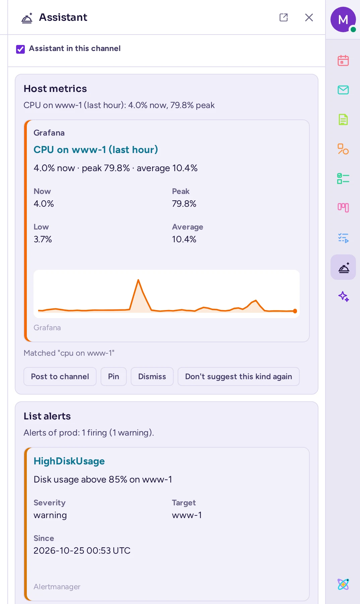

AI agents
When your administrators have set them up, AI agents can answer questions, summarise conversations, rewrite your messages and prepare recaps. This page explains how to use them, and what they can see.
About agents
An agent is an AI assistant with an account of its own: you mention it or write to it like a colleague, and it answers. Agents have an AGENT tag next to their name, where other automated accounts have BOT. Your system administrator or your community's admins set agents up: they choose the AI service each one uses (a model connection, which may run on your organisation's own servers or at an outside provider), its instructions, and who may talk to it. You can't create agents yourself. If there is no agent you may use, the agents' features on this page don't show.
A small dot by an agent's name shows when it is busy: it pulses while the agent thinks or works, and stays lit while it waits for someone. In the member list and on its profile card, the agent's status line also says what it is doing.
Agents also have a status dot like a person's: green while it can answer, yellow (away) if its model doesn't answer, grey (offline) when it is off. Nobody, system admins included, can set an agent's status themselves.
Some features need no agent: rewriting your messages and recaps are built into Antimatter. They work once your administrator has chosen an AI service (a model connection) for each of them.
Chat with an agent
- Click AI chat (the sparkle icon) in the app rail on the right edge of the window. The AI chat panel opens.
- If you may use several agents, click the agent's name at the top of the panel and pick another one. Your choice is kept, and also used by the AI actions below.
- Type your question in "Ask … anything" at the bottom of the panel and press Enter.

The panel opens the conversation. The agent's answer appears as it writes it, and you reply at the bottom of the panel to go on. Click Back to return to the start, New conversation to start another one, and Conversations to see all your conversations with agents, the most recent first. The start of the panel also lists your last three, with See all conversations.
Opening another agent's conversation from that list shows that agent for this conversation without changing the one you picked at the top of the panel: Back returns to the list, or to the start, with your own agent still picked.
Your conversations with an agent are direct messages: each question starts a thread in your direct message with the agent, which you also find among your direct messages, and where you can write to the agent too. The Conversations list also has the threads in channels where an agent answered you, marked "in a channel".
Tools
When an agent may use tools, the panel's header has a Tools button: it lists the tools the agent may use for you, each with a switch to turn that source or tool off for yourself, for every agent. A tool from an outside service shows Sign in, which opens a new window, or Signed in · Sign out once you have; a shared account instead says "A shared account: its tools only read". A tool not set to run on its own says "Asks you first". An agent's reply may ask you to Confirm or Decline a tool call, with its exact arguments shown: only you can answer, within a day.
Ask about the channel you are reading
When you open the panel while reading a channel, its start shows suggestions under "About #channel" ("About this conversation" in a direct or group message): Summarise what's new (since you last read it), Summarise the last 7 days and Action items this week. The agent reads the channel's latest messages, at most 200, and answers in a new conversation.
Custom prompts
If you often ask the same thing, save it as a custom prompt with Manage prompts, in the AI menu of the message box.
The assistant
Where your administrator turned it on, the assistant is a quiet feed of cards for the conversation you have it open on: things it noticed, without you having to ask. Click its rail icon (a service bell) in the app rail to open its panel. A small count on the icon shows how many cards arrived since you last opened it; it never badges your channel list or sends a notification.
The panel lists the current conversation's cards like a chat, oldest at the top and newest at the bottom: a direct or group message, or a private channel, only while you're a member of it. If a card arrives while you've scrolled up, a New card ↓ chip appears at the bottom; click it to jump down. With no cards yet, the panel says so; if the assistant is off here, it says that instead, with its rail icon hidden.

Each card is one of two kinds:
- An insight: something read-only the assistant found. A tool's result that carries data shows a small chart with a threshold line, coloured by its alert state, or, for a listing such as an alert or a dashboard, a formatted message with a title and fields — the same look as an integration's own posts.
- An action: something that would change something, shown with its exact parameters, never run on its own.
Under a card, Why says what made it appear: the words of your message it matched, or how confident the assistant's model was. Point at it to highlight the message that triggered the card in the channel, or click Go to message to jump to it.
Every card has Pin (or Unpin, marked Pinned; a pinned card stays in its place in the feed rather than moving), Dismiss, and Don't suggest this kind again, which mutes that card's tool for you everywhere and dismisses the card. An insight also has Post to channel: it warns first, since the channel may have people who can't see the source, then Post anyway posts the card there as a formatted message — its one-line summary and the same attachment you see — as you, with your own permissions. An action instead shows its offer: Run when it's yours to act on, Offered to <name> when it's someone else's, or Claim when nobody holds it yet. In this release, Run only records that you ran it: the action itself comes in a later version.
The panel's own header has a switch, Assistant in this channel, and the tools you've muted, with Unmute for each: turning the assistant off for a channel also forgets its cards there. There is no other prompt or menu for either.
Ask an agent in a channel
To ask an agent in front of everyone, mention it like a person: type @ and the agent's name, then your question. The agent answers in a thread under your message, which everyone in the channel can read. It reads that thread, not the whole channel.
To go on, reply in the thread: in a thread the agent started, or one you started by mentioning it, your replies go to the agent without mentioning it again, as long as they mention nobody else.
If you aren't allowed to talk to an agent, or not in that channel, it doesn't answer: a notice that only you see says "@agent isn't available to you here." Agents don't answer other agents, bots or webhooks. Some channels have an agent that replies automatically: their admins set this up in the channel's settings.
AI actions on a message
- Point at a message and click Message actions (⋯).
- Point at More actions.
- Choose one of the AI actions, set apart by a line:
- Summarise thread: a summary of the thread the message is in.
- Find action items: the tasks and who should do them.
- Find open questions: the questions still waiting for an answer.
- React for me: the agent picks a fitting emoji and adds it as your reaction.
Except for React for me, the request is posted as your message in your direct message with the agent you chose in the AI chat panel, for example "Summarise this thread" with a link to it. The agent answers there, and the AI chat panel opens on that conversation: nobody else sees it. You can reply to ask for more. The same actions are under More actions in the thread panel's Thread actions menu.
Catch up on a channel
When you open a channel with unread messages, the "Unread" line that marks where they start has an Ask AI button. Click it, pick the agent under "Generate With:" if you like, then choose Summarize new messages, Find action items or Find open questions. As for the AI actions, the agent answers in your direct message with it, and the AI chat panel opens on the conversation, visible only to you.
Rewrite your message before sending it
Rewriting is available once your administrator has chosen an AI service for it. It doesn't use an agent, so there is no agent to pick.
- Write your message.
- Click Show formatting (Aa) if the formatting bar is hidden, then click AI at its left end.
- Under Rewrite with AI, choose Improve writing, Fix spelling & grammar, Make it shorter, Make it more formal or Translate…. For a translation, type the language, such as "French", and press Enter.
The message box shows "The AI is rewriting your message…", then replaces your text with the new one, marked Rewritten by AI. Read it, change it if you like, and send it. Click Undo to get your own text back. For a reply in a thread, the AI also reads the start of the thread and its last replies, so the rewrite fits the conversation.

When your server has agents, the same menu also lists your custom prompts, under "GENERATE WITH:", where you pick the agent that runs them.
Recaps
A recap is a summary of several channels, prepared for you by the AI: once, or on a schedule, such as every weekday morning. Recaps are available when your administrator has chosen an AI service for them. You then find Recaps in the list of your direct messages. If the service is removed later, your recaps stay there to read or delete, but you can't create or regenerate any until another one is chosen.
Create a recap
- Open Recaps and click Add a recap.
- Give your recap a name.
- Choose Recap selected channels or Recap all my unreads.
- Turn on Run once to get a recap right away, without a schedule.
- For selected channels, pick the channels to include.
- For a single recap, check the list of channels and click Start recap. For a scheduled one, choose the days and the time it runs, the Time period to cover (Last 24 hours, Last 7 days or Since last read), add Additional instructions for the AI if you like, and click Create schedule.
A recap takes a moment to prepare. It then appears under Unread, with a card for each channel: its highlights and action items. From a recap's menu you can open a channel, mark it as read, regenerate the recap or delete it. Your scheduled recaps are under Scheduled, where you can pause them. Your administrator limits how many recaps you can run each day.
Meeting summaries
When a call was transcribed (see Transcription and live captions), the transcript's message in the call's thread can offer Create meeting summary. The agent reads the transcript, if you may read that channel, and writes the summary in your direct message with it: the AI chat panel opens on it.
Search with an agent
If your administrator turned on AI search, the search box in the conversation header offers an Agents option in its suggestions. Choose it, then ask a question in your own words: the agent looks for the answer in the messages of the channels you are a member of, and answers in the AI chat panel.
What agents see
- An agent only reads what you could read yourself. It answers with your rights: your access to its AI service, and your limits.
- When you ask an agent, it reads the conversation up to your message: the thread you are in (its latest 50 messages at most), or your message alone when it starts a conversation. It also reads up to three messages you link to, only if you may read them.
- With each request, the agent also receives some context: its instructions, who is asking, where (the channel's name, or a direct or group message) and today's date.
- For a summary, action items or open questions, it reads the thread, or the channel's messages since the time you chose (at most 200), again each time you reply in that conversation. A rewrite reads your draft, and in a thread also the start of the thread and its last replies.
- What the agent reads is sent to the AI service your administrator chose for it, and what a built-in feature reads (your draft for a rewrite, the channels of a recap) to the service chosen for that feature. That service may be outside your organisation: ask your administrator if you need to know where your data goes.
- Your conversations with an agent are stored on your Antimatter server, like other messages.
- Answers to AI actions, channel summaries and searches are posted in your direct message with the agent: only you see them. Answers to mentions in a channel are visible to everyone in it.
- When an agent uses a tool, it reads and acts only with your own rights, and, for a tool of an outside service, with your own sign-in there (see Tools).
If you don't see the agents
If the AI chat panel says "No agents yet", there is no agent you may use: ask an admin to set one up for you. Admins see Set up an agent instead (see Agents in the community admins' guide). Without a usable agent, the AI actions and Ask AI don't show. The AI button of the message box shows when rewriting is set up, or when you have agents for your custom prompts.